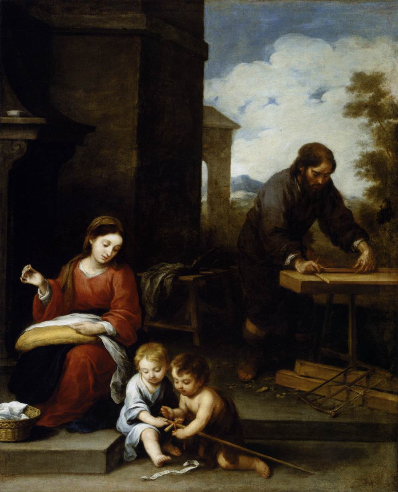

135. THE first motive, it devotes us entirely to the service of God, which shows us the excellence of this consecration of ourselves to Jesus Christ by the hands of Mary.
If we can conceive on earth no employment more lofty than the service of God—if the least servant of God is richer, more powerful and more noble than all the kings and emperors of this earth, unless they also are the servants of God—what must be the riches, the power and the dignity of the faithful and perfect servant of God, who is devoted to His service entirely and without reserve, to the utmost extent possible? Such is the faithful and loving slave of Jesus in Mary who has given himself up entirely to the service of that King of Kings, by the hands of His holy Mother, and has reserved nothing for himself. Not all the gold of earth nor all the beauties of the heavens can repay him.
136. The other congregations, associations and confraternities erected in honour of Our Lady and His holy Mother, which do such immense good in Christdom, do not make us give everything without reserve. They prescribe to their members only certain practices and actions to satisfy their obligations. They leave them free for all the other actions and times of their lives. But this devotion makes us give to Jesus and Mary, without reserve, all our thoughts, words, actions, and sufferings, all the times of our life, in such sort that whether we wake or sleep, whether we eat or drink, whether we do great actions or very little ones, it is always true to say that whatever we do, even without thinking of it, is, by virtue of our offering, at least if it has not been expressly retracted, done for Jesus and Mary. What a consolation is this!
137. Moreover, as I have already said, there is no other practice equal to this for enabling us to get rid with facility of a certain proprietorship, which imperceptibly insinuates itself into our best actions. Our good Jesus gives us this great grace in recompense for the heroic and disinterested action of making a cession to Him, by the hands of His holy Mother, of all the value of our good works. If He gives a hundredfold even in this world to those who for His love quit outward and temporal and perishable goods, what will that hundredfold be which He will give to the man who sacrifices for Him even his inward and spiritual goods!
138. Jesus, our great friend, has given Himself to us without reserve, body and soul, virtues, graces, and merits. Se toto totum me comparavit, said St. Bernard—“He has bought the whole of me by the whole of Himself.” Is it not, then, a simple matter of justice and of gratitude that we should give Him all that we can give Him? He has been the first to be liberal towards us; let us, at least, be the second; and then, in life and death, and throughout all eternity, we shall find Him still more liberal. Cum liberali liberalis erit.
139. THE second Motive which shows us how just it is in itself, and advantageous to Christians, to consecrate themselves entirely to the Blessed Virgin by this practice, in order to belong more perfectly to Jesus Christ.
This good Master has not disdained to shut Himself up in the womb of the Blessed Virgin, as a captive and as a loving slave, and to be subject and obedient to her for thirty years. It is here, I repeat it, that the human mind loses itself when it seriously reflects on the conduct of the Incarnate Wisdom, who has not willed, though He might have done so, to give Himself to men directly, but through the Blessed Virgin. He did not will to come into the world at the age of a perfect man, independent of others, but like a poor and little babe, dependent on the cares and nourishment of this holy Mother. He is that Infinite Wisdom, who had a boundless desire to glorify God His Father, and to save men; and yet He found no more perfect means, no shorter way to do it, than to submit Himself in all things to the Blessed Virgin, not only during the first eight, ten, or fifteen years of His life, like other children, but for thirty years! He gave more glory to God His Father during all that time of submission and dependence to our Blessed Lady than He would have given Him if He had employed those thirty years in working miracles, in preaching to the whole earth, and in converting all men, seeing that His heavenly Father and Himself had ruled it thus: Quce placita sunt ei, facio semper. Oh! how highly we glorify God, when, after the example of Jesus, we submit ourselves to Mary!
Having, then, before our eyes an example so plain and so well known to the whole world, are we so senseless as to imagine that we can find a more perfect or a shorter means of glorifying God than that of submitting ourselves to Mary, after the example of her Son?
140. Let us recall here, as a proof of the dependence we ought to have on our Blessed Lady, what I have said above in bringing forward the example which the Father, the Son, and the Holy Ghost give of this dependence. The Father has not given, and does not give, His Son except by her; He has no children but by her, and communicates no graces but by her. God the Son has not been formed for the whole world in general except by her; and He is not daily formed and engendered except by her, in the union with the Holy Ghost; neither does He communicate His merits and His virtues except by her. The Holy Ghost has not formed Jesus Christ except by her; neither does He form the members of our Lord’s Mystical Body except by her; and through her alone does He dispense His favours and His gifts. After so many and such pressing examples of the Most Holy Trinity, can we, without an extreme blindness, dispense ourselves from Mary, and not consecrate ourselves to her, and depend on her to go to God, and to sacrifice ourselves to God?
141. Here are some Latin passages of the Fathers, which I have chosen to prove what has just been said:
“Duo filii Mariae sunt, homo Deus et homo purus, unius corporaliter, et alterius spiritualiter Mater est Maria” (St. Bonaventure and Origen).
“Mary has two sons, the one a God-man, the other, mere man. She is Mother of the first corporally and of the second spiritually” (St. Bonaventure and Origen).
“Haec est voluntas Dei, qui totum nos voluit habere per Mariam, ac proinde si quid spei, si quid gratiae, si quid salutis, ab ea noverimus redundare” (St. Bernard).
“This is the will of God who willed that we should have all things through Mary. If then, we possess any hope or grace or gift of salvation, let us acknowledge that it comes to us through her” (St. Bernard).
“Omnia dona, virtutes gratiae ipsius Spiritus Sancti, quibus vult, et quando vult, quomodo vult, et quantum vult, per ipsius manus administrantur” (St. Bernardine).
“All the gifts, graces, virtues of the Holy Spirit are distributed by the hands of Mary, to whom she wills, when she wills, as she wills, and in the measure she wills” (St. Bernardine).
“Quia indignus eras cui donaretur, datum est Mariae, ut per illam acciperes quidquid haberes” (St. Bernard).
“As you were not worthy that anything divine should be given to you, all graces were given to Mary so that you might receive through her all graces you would not otherwise receive” (St. Bernard).
142. God, says St. Bernard, seeing that we are unworthy to receive His graces immediately from His own hand, gives them to Mary, in order that we may have through her whatever He wills to give us; and He also finds His glory in receiving through the hands of Mary the gratitude, respect, and love, which we owe Him for His benefits. It is most just, then, that we should imitate this conduct of God, in order, as the same St. Bernard says, that the grace should return to its Author by the same canal through which it came: Ut eodem alveo ad largitorem gratice gratia redeat, quo fluxit.
This is precisely what our devotion does. We offer and consecrate all we are and all we have to the Blessed Virgin, in order that our Lord may receive through her mediation the glory and the gratitude which we owe Him. We acknowledge ourselves unworthy and unfit to approach His Infinite Majesty by ourselves; and it is on this account that we avail ourselves of the intercession of the most holy Virgin.
143. Moreover, this devotion is a practice of great humility, which God loves above all the other virtues. A soul which exalts itself abases God; a soul which abases itself exalts God. God resists the proud, and gives His grace to the humble. If you abase yourself, thinking yourself unworthy to appear before Him and to draw nigh to Him, He descends, and lowers Himself to come to you, to take pleasure in you, and to exalt you in spite of yourself. On the contrary, when you are hardy enough to approach God without a mediator, God flies from you, and you cannot reach Him. Oh, how He loves humility of heart! It is to this humility that our peculiar devotion engages us, because it teaches us never to draw nigh of ourselves to our Lord, however sweet and merciful He may be, but always to avail ourselves of the intercession of our Blessed Lady, whether it be to appear before God, or to speak to Him, or to draw near to Him, or to offer Him anything, or to unite and consecrate ourselves to Him.
144. § 1. THE most holy Virgin, who is a Mother of sweetness and mercy, and who never lets herself be vanquished in love and liberality, seeing that we give ourselves entirely to her, to honour and to serve her, and for that end strip ourselves of all that is dearest to us in order to adorn her, meets us in the same spirit. She also gives her whole self, and gives it in an unspeakable manner, to him who gives all to her. She causes him to be engulfed in the abyss of her graces. She adorns him with her merits; she supports him with her power; she illuminates him with her light; she inflames him with her love; she communicates to him her virtues, her humility, her faith, her purity, and the rest. She makes herself his bail, his supplement, and his dear all towards Jesus. In a word, as that person is all consecrated to Mary, so is Mary all for him; after such a fashion that we can say of that perfect servant and child of Mary what St. John the Evangelist said of himself, that he took the holy Virgin for all his goods, -Accepit eam discipulus in sua.
145. It is this which produces in the soul, if it is faithful, a great distrust, contempt, and hatred of self, and a great confidence and a great self-abandonment in the Blessed Virgin, its good Mistress. A man no longer, as before, leans on his own dispositions, intentions, merits, and good works; because, having made an entire sacrifice of them to Jesus Christ by that good Mother, he has but one treasure now, where all his goods are laid up, and that is no longer in himself; for his treasure is Mary.
It is this which makes him approach our Lord without servile or scrupulous fear, and pray to Him with great confidence. It is this which makes him enter into the sentiments of the devout and learned Abbot Rupert, who, making an allusion to the victory that Jacob gained over the angel, said to our Blessed Lady these beautiful words: “O Mary, my Princess, Immaculate Mother of a God-Man, Jesus Christ, I desire to wrestle with that Man, namely, the Divine Word, not armed with my own merits, but with yours.” O Domina, Dei genitrix Maria, et incorrupta Mater Dei et Hominis, non meis, sed tuis armatus meritis, cum isto Viro, seu Verbo Dei, luctari cupio (Rup. Prolog. in Cantic.)
Oh, how strong and mighty we are with Jesus Christ, when we are armed with the worthy merits and intercession of the Mother of God, who, as St. Augustine says, has lovingly vanquished the Most High.
146. § 2. As by this practice we give to our Lord by His Mother’s hands all our good works, that good Mother purifies them, embellishes them, and makes them acceptable to her Son.
§ 2.1. She purifies them of all the soil of self-love, and of that imperceptible attachment to the creature, which slips incessantly into our best actions. As soon as they are in her most pure and fruitful hands, those same hands, which have never been sullied or idle, and which purify whatever they touch, take away from the present which we make to her all that was spoilt or imperfect about it.
147. § 2.2. She embellishes our works, in adorning them with her own merits and virtues. It is as if a peasant, wishing to gain the friendship and benevolence of the king, went to the queen, and presented her with a fruit, which was his whole revenue, in order that she might present it to the king. The queen, having accepted the poor little offering from the peasant, would place the fruit on a large and beautiful dish of gold, and so, on the peasant’s behalf, would present it to the king. Then the fruit, however unworthy in itself to be a king’s present, would become worthy of his majesty, because of the dish of gold on which it rested and the person who presented it.
148. § 2.3. She presents these good works to Jesus Christ; for she keeps nothing of what is given for herself, as if she was our last end. She refers it all faithfully to Jesus. If we give to her, we give necessarily to Jesus; if we praise her or glorify her, we at once praise and glorify Jesus. As of old, when St. Elizabeth praised her, so now, when we praise and bless her, she sings herself, Magnificat anima mea Dominum.
149. § 2.4. She persuades Jesus to accept these good works, however little and poor the present may be for that Saint of saints and that King of kings. When we present anything to Jesus by ourselves, and relying on our own industry and disposition, Jesus examines the offering, and often rejects it because of the stains it has contracted through self-love; just as of old He rejected the sacrifices of the Jews when they were full of their own will. But when we present Him anything by the pure and virginal hands of His Well-beloved, we take Him by His weak side, if it is allowable to use such a term. He does not consider so much the thing that is given Him, as the Mother who gives it He does not consider so much whence the offering comes, as by whom it comes. Thus Mary, who is never repelled and always well received by her Son, makes every tiling she presents to Him, great or small, acceptable to His Majesty. For Jesus to receive it and to take complacence in it, it is enough that Mary should present it. This is the great counsel which St. Bernard used to give to those whom he conducted to perfection: “When you want to offer anything to God, take care to offer it by the most agreeable and worthy hands of Mary, unless you wish to have it rejected,”—Modicum quod offerre desideras manibus Marice offerendum tradere cura, si non vis sustinere repulsam.
150. Is not this what nature itself suggests to the little, with regard to the great, as we have already seen? Why should not grace lead us to do the same thing with regard to God, who is infinitely exalted above us, and before whom we are less than atoms? seeing, moreover, that we have an advocate so powerful that she is never refused; so full of inventions, that she knows all the secret ways of gaining the heart of God; and so good and charitable, that she repels no one, however little and wretched he may be.
I shall bring forward presently the true figure of these truths in the history of Jacob and Rebecca.
151. THIS devotion, faithfully practised, is an excellent means of making sure that the value of all our good works shall be employed for the greatest glory of God. Scarcely anyone acts for that noble end, although we are all under an obligation to do so. Either we do not know where the greatest glory of God is to be found, or we do not wish to find it. But our Blessed Lady, to whom we cede the value and the merit of the good works we may do, knows most perfectly where the greatest glory of God is to be found; and, inasmuch as she never does anything except for the greatest glory of God, a perfect servant of that good Mistress, who is wholly consecrated to her, may say with the hardiest assurance, that the value of all his actions, thoughts, and words, is employed for the greatest glory of God, at least unless he expressly revokes his offering. Is there any consolation equal to this, for a soul who loves God with a pure and disinterested love, and who prizes the glory and interests of God far beyond his own?
152. THIS devotion is an easy, short, perfect, and secure way of arriving at union with our Lord, in which the perfection of a Christian consists.
§ 1. It is an easy way. It is the way which Jesus Christ Himself trod in coming to us, and in which there is no obstacle in arriving at Him. It is true that we can attain to divine union by other roads; but it is by many more crosses, and strange deaths, and with many more difficulties, which we shall find it hard to overcome. We must pass through obscure nights, through combats, through strange agonies, over craggy mountains, through cruel thorns, and over frightful deserts. But, by the path of Mary, we pass more gently and more tranquilly.
We do find, it is true, great battles to fight, and great hardships to master; but that good Mother and Mistress makes herself so present and so near to her faithful servants, to enlighten them in their darknesses and their doubts, to strengthen them in their fears, and to sustain them in their struggles and their difficulties, that in truth this virginal path to find Jesus Christ is a path of roses and honey compared with the other paths. There have been some Saints, but they have been in small numbers, who have passed by this sweet path to go to Jesus, because the Holy Ghost, faithful Spouse of Mary, has by a singular grace disclosed it to them. Such were St. Ephrem, St. John Damascene, St. Bernard, St. Bernardine, St. Bonaventure, St. Francis of Sales, and others. But the rest of the Saints, who are the greater number, although they have all had devotion to our Blessed Lady, have not on that account, or at least very little, entered upon this way. This is why they have had to pass through ruder and more dangerous trials.
153. How comes it, then, some of the faithful servants of Mary will say to me, that the loyal clients of this good Mother have so many occasions of suffering, nay, even more than others who are not so devout to her? They are contradicted, they are persecuted, they are calumniated, the world cannot endure them; or, again, they walk in interior darknesses, and in deserts where there is not the least drop of the dew of heaven. If this devotion to our Blessed Lady makes the road to Jesus easier, how comes it that they who follow it are the most despised of men?
154. I reply, that it is quite true that the most faithful servants of the Blessed Virgin, being also her greatest favourites, receive from her the greatest graces and favours of heaven, which are crosses. But I maintain that it is also the servants of Mary who carry these crosses with more facility, more merit, and more glory. That which would stay the progress of another a thousand times over, or perhaps would make him fall, does not once arrest their steps, but rather enables them to advance; because that good Mother, all full of the graces and unction of the Holy Ghost, preserves all the crosses, which she cuts for them, in the sugar of her maternal sweetness, so that they swallow them gaily, like preserved fruits, however bitter they may be in themselves; and I believe that a person who wishes to be devout, and to live piously in Jesus Christ, and consequently to suffer persecutions, and carry his cross daily, will never carry great crosses, or carry them joyously or perseveringly, without a tender devotion to our Lady, which is the sweetmeat and confection of crosses; just as a person would not be able to eat unripe fruits, without a great effort which he could hardly keep up, unless they had been preserved in sugar.
155. § 2. This devotion to the Blessed Virgin is a short road to find Jesus Christ, both because it is a road which we do not stray from, and because, as I have just said, it is a road we tread with joy and facility, and by consequence with promptitude. We make more progress in a brief period of submission to, and dependence on, Mary than in whole years of our own will, and of resting upon ourselves. A man obedient and submissive to Mary shall sing the signal victories which he shall gain over his enemies. They will try to hinder his advancing, or to make him retrace his steps, or to fall. This is true. But with the support, the aid, and the guidance of Mary, without falling, without drawing back one step, without even slackening his pace, he shall advance with giant strides towards Jesus, along the same path by which he knows that Jesus also came to us with giant strides, and in the briefest space of time.
156. Why do you think that Jesus lived so short a time on earth, and of those few years spent nearly all of them in subjection and obedience to His Mother? Ah, this is the truth: that He was perfected indeed in a short time, but that he lived a long time, longer than Adam, whose fall He had come to repair, although the patriarch lived above nine hundred years. Jesus Christ lived a long time, because He lived in complete subjection to His holy Mother, and closely united with her, in order that He might thus obey God His Father. For the Holy Ghost says that a man who honours his mother is like a man who layeth up a treasure; that is to say, he who honours Mary his Mother, up to the point of subjecting himself to her and obeying her in all things, will soon become exceedingly rich;
§ 2.1. Because he is every day amassing treasures, by the secret of that philosopher’s-stone—Qui honorat matrem quasi qui thesaurizat;
§ 2.2. Because it is the bosom of Mary which has surrounded and engendered a perfect man, and has had the capacity of containing Him whom the whole universe could neither contain nor comprehend—it is, I say, in the bosom of Mary that they who are youthful become elders in light, in holiness, in experience, and in wisdom; and that we arrive in a few years at the fulness of the age of Jesus Christ.
157. § 3. This practice of devotion to our Blessed Lady is also a perfect path by which to go and unite ourselves to Jesus, because the divine Mary is the most perfect and the most holy of creatures, and because Jesus, who has come to us most perfectly, took no other road for His great and admirable journey. The Most High, the Incomprehensible, the Inaccessible, He Who Is, has deigned to come to us, little worms of earth who are nothing. How has He done this? The Most High has come down to us perfectly and divinely by the humble Mary. He has come to us by her, without losing anything of His divinity and sanctity. So it is by Mary that the unspeakably little are to ascend, perfectly and divinely, without any fear, to the Most High. The Incomprehensible has allowed Himself to be comprehended and perfectly contained by the little Mary, without losing anything of His immensity. So also is it by the little Mary that we must let ourselves be held and guided perfectly without any reserve. The Inaccessible has drawn near to us, and has closely united Himself to us, perfectly, and even personally, to our humanity, by Mary, without losing any of His Majesty. So also is it by Mary that we must draw near to God, and unite ourselves perfectly and closely to His Majesty, without fear of being repulsed. In a word, He Who Is has designed to come to that which is not, and to make that which is not become God in Him Who Is; and He has done this perfectly in giving Himself and subjecting Himself entirely to the young Virgin Mary without ceasing to be in time He who is eternal. In like manner it is by Mary that we, who are nothing, can become like to God by grace and glory, by giving ourselves to her so perfectly and entirely as to be nothing in ourselves but everything in her, without fear of delusion.
158. Make for me, if you will, a new road to go to Jesus, and pave it with all the merits of the Blessed, adorn it with all their heroic virtues, illuminate and embellish it with all the lights and beauties of the Angels, and let all the Angels and Saints be there themselves to escort, defend, and sustain those who are ready to walk there; and yet in truth, in simple truth, I say boldly, and I repeat that I say truly, I would prefer to this new perfect path the immaculate way of Mary. Posui immaculatam viam meam. It is the way without any stain or spot, without original or actual sin, without shadow or darkness. When my sweet Jesus in His glory comes a second time on earth, as it is most certain He will do, to reign there, He will choose no other way for His journey than the divine Mary, by whom He came the first time so surely and so perfectly. But there will be a difference between His first and His last coming. The first time He came secretly and hiddenly; the second time He will come gloriously and resplendently. But both times He will come perfectly, because both times He will come by Mary. Alas, here is a mystery which is not understood. Hic taceat omnis lingua.
159. § 4. This devotion to our Blessed Lady is also a secure way to go to Jesus, and to acquire perfection by uniting us to Him.
§ 4.1. It is a secure way, because the practice which I am teaching is not new. M. Boudon, who died a little while ago in the odour of sanctity, says, in a book which he composed on this devotion, that it is so ancient we cannot fix precisely the date of its commencement. It is, however, certain that for more than seven hundred years we find traces of it in the Church.
St. Odilon, the abbot of Cluny, who lived about the year 1040, was one of the first who publicly practised it in France; as is remarked in his life.
Cardinal Peter Damien relates that, in the year 1036, the Blessed Marino, his brother, made himself a slave of the Blessed Virgin in the presence of his director, in a most edifying manner. He put a rope round his neck, took the discipline, and laid on the altar a sum of money, to mark his devotion and consecration to our Lady; and he continued this devotion so faithfully during his whole life, that he deserved to be visited and consoled at his death by his good Mistress, and to receive from her mouth the promise of Paradise in recompense for his services.
Cesarius Bollandus mentions an illustrious cavalier, Vautier de Birbac, who, about the year 1500, consecrated himself to the Blessed Virgin.
This devotion was also practised by several private persons up to the seventeenth century, when it became public.
160. Father Simon de Roxas, of the Order of the Redemption of Captives, and preacher of Philip the Third, made this devotion popular in Spain and Germany; and through the instance of Philip the Third, he obtained of Gregory the Fifteenth ample indulgences for those who practised it.
Father de Los Rios, the Augustinian, devoted himself, with his intimate friend, Father Roxas, to spread this devotion, both by preaching and writing, through Spain and Germany. He composed a thick volume, called Hierarchia Mariana, in which he treats, with as much piety as learning, of the antiquity, excellence, and solidity of this devotion.
161. The Theatin Fathers, in the seventeenth century, established this devotion in Italy, Sicily, and Savoy.
Father Stanislas Phalacius, the Jesuit, increased this devotion wonderfully in Poland.
Father de Los Rios, in his work just cited, quotes the names of princes, princesses, dukes, and cardinals, of different kingdoms, who embraced this devotion.
Cornelius a Lapide, as much recommended for his piety as for his profound erudition, having received a commission from several theologians to examine this devotion, did so with great maturity and deliberation, and praised it in a manner which we might have expected from his well-known piety; and many other distinguished persons have followed his example.
The Jesuit Fathers, always zealous in the service of our Blessed Lady, presented, in the name of the Congreganists of Cologne, a little treatise on this devotion to the Duke Ferdinand of Bavaria, who was then Archbishop of Cologne. He gave it his approbation, and permission to print it; and exhorted all the parish-priests and religious of his diocese to promote the devotion as much as ever they could.
162. Cardinal Berulle, whose memory is in benediction through all France, was one of the most zealous in spreading this devotion in that country, in spite of all the calumnies and persecutions which he suffered from critics and libertines. They accused him of novelty and superstition. They wrote and published against him, a libel in order to defame him; and they made use, or rather it was the devil by their ministry, of a thousand subtleties to hinder his spreading the devotion in France. But that great and holy man only answered their calumnies by his patience; and he met the objections contained in their libel by a short treatise, in which he most convincingly refuted them. He showed them that the devotion was founded on the example of Jesus Christ, on the obligations which we have to Him, and on the vows which we have made in holy Baptism. It was chiefly by this last reason that he shut his adversaries’ mouths, making them see that this consecration to the holy Virgin, and to Jesus Christ by her hands, is nothing else than a perfect renewal of the vows and promises of Baptism. He has said many beautiful things on this practice, which can be read in his works.
163. We may also see in M. Boudon’s book the different Popes who have approved this devotion, the theologians who have examined it, the persecutions they have undergone and have overcome, and the thousands of persons who have embraced it, without any Pope having ever condemned it. Indeed, we cannot see how it could be condemned without overturning the foundations of Christianity.
It is clear, then, that this devotion is not new; and that if it is not common, it is because it is too precious to be relished and practised by all the world.[3]
164. § 4.2. This devotion is a secure means of going to Jesus Christ, because it is the very characteristic of our Blessed Lady to conduct us surely to Jesus, just as it is the very characteristic of Jesus to conduct us surely to the Eternal Father. Spiritual persons, therefore, must not fall into the false belief that Mary can be a hindrance to them in attaining to divine union; for is it possible that she who has found grace before God for the whole world in general, and for each one in particular, should be a hindrance to a soul in finding the great grace of union with Him? Can it be possible that she who has been all full and superabounding with graces, so united and transformed into God that it has been a kind of necessity that He should be incarnate in her, should be a stumbling-block in the way of a soul’s perfect union with God?
It is quite true that the view of other creatures, however holy, may perhaps at certain times retard divine union. But this cannot be said of Mary, as I have remarked before, and shall never weary of repeating. One reason why so few souls come to the fulness of the age of Jesus Christ is because Mary, who is as much as ever the Mother of the Son, and as much as ever the fruitful Spouse of the Holy Ghost, is not sufficiently formed in their hearts. He who wishes to have the fruit well ripened and well-formed must have the tree that produces it; he who wishes to have the fruit of life, Jesus Christ, must have the tree of life, which is Mary; he who wishes to have in himself the operation of the Holy Ghost must have His faithful and indissoluble Spouse, the divine Mary, who makes Him fertile and fruit-bearing, as we have said elsewhere.
165. Be persuaded, then, that the more you look at Mary in your prayers, contemplations, actions, and sufferings, if not with a distinct and definite view, at least with a general and imperceptible one, the more perfectly will you find Jesus Christ, who is always with Mary, great, powerful, operative, and incomprehensible. Thus, so far from the divine Mary, all absorbed in God, being an obstacle to the perfect in their attaining to union with God, there has never been up to this point, and there never will be, any creature who will aid us more efficaciously in this great work, whether by the graces she will communicate to us for this effect—for, as a Saint has said, no one can be filled with the thought of God except by her, Nemo cogitatione Dei repletur, nisi per te—or whether by freedom from the illusions and trickeries of the evil spirit, which she will guarantee to us.
166. Where Mary is, there the evil spirit is not. One of the most infallible marks we can have of our being conducted by the good Spirit is our being very devout to Mary, our thinking often of her, and our speaking often of her. This last is the thought of a Saint, who adds, that as respiration is a certain sign the body is not dead, the frequent thought and loving invocation of Mary is a certain sign the soul is not dead by sin.
167. As it is Mary alone, says the Church (and the Holy Ghost, who guides the Church), who alone makes all heresies come to naught—Sola cunctas hcereses interemisti in universo mundo—we may be sure that, however critics may grumble, no faithful client of Mary will ever fall into heresy or illusion, at least formal. He may very well err materially, take falsehood for truth, and the evil spirit for the good; and yet he will do even this with more difficulty than others. But sooner or later he will acknowledge his material fault and error; and when he knows it, he will not be in any way self—opinionated in believing and maintaining what he had once thought true.
168. Whoever, then, wishes to put aside the fear of illusion, which is the besetting timidity of men of prayer, and to advance in the way of perfection, and surely and perfectly to find Jesus Christ, let him embrace with great heartedness—corde magno et animo volenti—this devotion to our Blessed Lady, which perhaps he has not known before; let him enter into this excellent way, which was unknown to him, and which I now point out: Excellentiorem viam vobis demonstro. It is a path trodden by Jesus Christ, the Incarnate Wisdom, our sole Head. One of His members in passing by the same road cannot deceive himself.
It is an easy road, because of the fulness of the grace and unction of the Holy Ghost, which fills it to overflowing. No one wearies there; no one walking there has ever to retrace his steps. It is a short; road, which leads us to Jesus in a little time. It is a perfect road, where there is no mud, no dust, nor the least spot of sin. Lastly, it is a secure road, which conducts us to Jesus Christ and life eternal in a straight and secure manner, without turning to the right hand or to the left. Let us, then, set forth upon that road, and walk there day and night, until we come to the fulness of the age of Jesus Christ.
169. THIS practice of devotion gives to those who make use of it faithfully a great interior liberty, which is the liberty of the children of God. For, as by this devotion we make ourselves slaves of Jesus Christ, and consecrate ourselves entirely to Him in this capacity, our Good Master, in recompense for the loving captivity in which we put ourselves;
§ 1. Takes all scruple and servile fear from the soul, with everything that is capable of contracting, imprisoning, or confusing it;
§ 2. He enlarges the heart by a firm confidence in God, making it look at Him as a Father; and;
§ 3. He inspires us with a tender and filial love.
170. Without stopping to prove these truths by arguments, I shall be content to quote here what I have read in the life of Mother Agnes of Jesus, a Dominicaness of the convent of Langeac, in Auvergne; who died there, in the odour of sanctity, in the year 1634. When she was only seven years old, and was suffering from great spiritual pains, she heard a voice which told her that if she wished to be delivered from all her pains, and to be protected against all her enemies, she was as quickly as possible to make herself the slave of Jesus and His most holy Mother. She had no sooner returned to the house than she gave herself up entirely to Jesus and His Mother in this capacity, although up to that time she had not known so much as what the devotion meant. Having found an iron chain, she put it round her body, and wore it to her death. After this action, all her pains and scruples ceased, and she found herself in a great peace and dilatation of heart. It was this which engaged her to teach the devotion to many persons, who made great progress in it, and, among others, to M. Olier, the founder of St. Sulpice, and to many priests and ecclesiastics of the same seminary. One day our Lady appeared to her, and put round her neck a chain of gold, to testify the joy she had in Mother Agnes having made herself her Son’s slave and her own; and St. Cecilia, who accompanied our Lady in that apparition, said to the religious: “Happy are the faithful slaves of the Queen of Heaven; for they shall enjoy true liberty,”—Tibi servire libertas.
171. ANOTHER consideration which may engage us to embrace this practice is that of the great good which our neighbour will receive from it. For by this practice we exercise charity towards him in an eminent manner, seeing that we give him by Mary’s hands all that is most precious to ourselves—which is the satisfactory and impetratory value of all our good works, without excepting the least good thought, or the least little suffering. We agree that all the satisfactions we may have acquired, or may acquire up to the moment of our death, should be employed at our Lady’s will, either for the conversion of sinners, or for the deliverance of souls from Purgatory.
Is not this to love our neighbour perfectly? Is not this to be the true disciple of Jesus Christ, who is always to be recognised by his charity? Is not this the way to convert sinners without any fear of vanity; and to deliver souls from Purgatory, without scarcely doing anything but what we are obliged to do by our state of life?
172. To understand the excellence of this motive, we must understand also what a good it is to convert a sinner, or to deliver a soul from Purgatory. It is an infinite good, which is greater than to create heaven and earth, because we give to a soul the possession of God. If by this practice we deliver but one soul in our life from Purgatory, or convert but one sinner, would not that be enough to induce a truly charitable man to embrace it?
But we must remark that, inasmuch as our good works pass through the hands of Mary, they receive an augmentation of purity, and consequently of merit, and of satisfactory and impetratory value. On this account they become more capable of solacing the souls in Purgatory and of converting sinners than if they did not pass by the virginal and liberal hands of Mary. It may be little that we give by our Lady; but, in truth, if it is given without our own will, and with a disinterested charity, that little becomes very mighty to turn the wrath of God, and to attract His mercy. It would be no wonder if, at the hour of death, it should be found that a person faithful to this practice shall, by the means of it, have delivered many souls from Purgatory, and converted many sinners, though he shall have done nothing more than the ordinary actions of his state of life. What joy at his judgment! What glory in his eternity!
173. LASTLY, that which in some sense most persuasively engages us to this devotion to our Lady is, that it is an admirable means of persevering and being faithful in virtue. Whence comes it that the majority of the conversions of sinners are not durable? Whence comes it that we relapse so easily into sin? Whence comes it that the greater part of the just, instead of advancing from virtue to virtue and acquiring new graces, often lose the little virtue and the little grace they have? This misfortune comes, as I have shown before, from the fact that man is at once so corrupt, so feeble, and so inconstant, and yet trusts to himself, leans on his own strength, and believes himself capable of guarding the treasure of his graces, of his virtues and merits.
On the other hand, by this devotion we confide all we possess to the Blessed Virgin, who is faithful; we take her for the universal depositary of all our goods of nature and of grace. It is to her fidelity that we trust them. It is on her power that we lean. It is on her mercy and charity that we build, in order that she may preserve and augment our virtues and merits, in spite of the devil, the world, and the flesh, who put forth all their efforts to take them from us. We say to her, as a good child to his mother, and a faithful servant to her mistress, Depositum custodi—“My good Mother and Mistress, I acknowledge that up to this time I have, by your intercession, received more grace from God than I deserve; and my sad experience teaches me that I carry this treasure in a frail vessel, and that I am too weak and too miserable to keep it safely of myself. I beseech you, therefore, receive in trust all which I possess, and keep it for me by your fidelity and power. If you keep it for me, I shall lose nothing; if you hold me up, I shall not fall; if you protect me, I shall be sheltered from my enemies.”
174. Listen to what St. Bernard said in former times, in order to encourage us to adopt this practice: “When Mary holds you up, you will not fall; when she protects you, you need not fear; when she leads you, you will not tire yourself; when she is favourable to you, you will arrive at the harbour of safety,”—Ipsa tenente, non corruis; ipsa propitia, pervenis. St. Bonaventure seems to say the same thing in still more formal terms. “The Blessed Virgin,” he says, “is not only retained in the plenitude of the Saints, but she also retains and keeps the Saints in their plenitude, so that it may not diminish. She hinders their virtues from being dissipated, their merits from withering, their graces from being lost, the devils from hurting them, and even our Lord from punishing them when they sin.” Virgo non solum in plenitudine sanctorum detinetur, sed etiam in plenitudine sanctos detinet, ne plenitudo minuatur; detinet virtutes, ne fugiant; detinet merita, ne pereant; detinet gratias, ne effluant; detinet dcemones, ne noceant; detinet Filium, ne peccatores percutiat (St. Bonav. In Specul. B. V.)
175. Our Blessed Lady is the faithful Virgin, who by her fidelity to God repairs the losses which the faithless Eve has caused by her infidelity. It is she who obtains the graces of fidelity and perseverance for those who attach themselves to her. It is on this account that a Saint compares her to a firm anchor, which holds them fast, and hinders their making shipwreck in the agitated sea of this world, where so many persons perish simply through not being fastened to that anchor. “We fasten our souls,” says he, “to thy hope, as to an abiding anchor,”—Animas ad spem tuam sicut ad firmam ancoram alligamus. It is to her that the Saints who have saved themselves have been the most attached, and have done their best to attach others, in order to persevere in virtue. Happy then, a thousand times happy, are the Christians who are now fastened faithfully and entirely to her, as to a firm anchor! The violence of the storms of this world will not make them founder, nor sink their heavenly treasures. Happy those who enter into Mary, as into the ark of Noe! The waters of the deluge of sin, which drowns so great a portion of the world, shall do no harm to them. Qui operantur in me non peccabunt—“They who work in me shall not sin,” says Mary, with the Divine Wisdom. Blessed are the faithless children of the unhappy Eve, if only they attach themselves to the faithful Mother and Virgin, who remains always faithful, and never belies herself—Fidelis permanet, seipsam negare non potest! She always loves those who love her—Ego diligentes me diligo—not only with an affective love, but with an effectual and efficacious one, by hindering them, through a great abundance of graces, from drawing back in the pursuit of virtue, from falling in the road, and from losing the grace of her Son.
176. This good Mother, always out of pure charity, receives whatever we deposit with her; and what she has once received in her office of depositary, she is obliged by justice, in virtue of the contract of trusteeship, to keep safely for us: just as a person, with whom I have left a thousand pounds in trust, would be under the obligation of keeping them safely for me; so that if, by his negligence, they were lost, he would in justice be responsible to me for them. But the faithful Mary cannot let anything which has been intrusted to her be lost through her negligence. Heaven and earth could pass away sooner than she could be negligent or faithless to those who trust in her.
177. Poor children of Mary, your weakness is extreme, your inconstancy is great, your inward nature is thoroughly corrupted, you are drawn (I grant it) from the same corrupt mass as all the children of Adam and Eve. Yet do not be discouraged on that account. Console yourselves, and exult in having the secret which I teach you—a secret unknown to almost all Christians, even the most devout.
Leave not your gold and silver in your coffers, which have been already broken open by the evil spirits, who have robbed you. Those coffers are too little, too weak, too old, to hold a treasure so precious and so great. Put not the pure and clear water of the fountain into your vessels, all spoilt and infected by sin. If the sin is there no longer, at least the odour of it is, and so the water will be spoilt. Put not your exquisite wines into your old casks, which have had bad wine in them; else even these wines will be spoilt, and perhaps break the casks, and be spilled upon the ground.
178. Though you, predestinate souls, understand me well enough, I will speak yet more openly. Trust not the gold of your charity, the silver of your purity, the waters of your heavenly graces, nor the wines of your merits and virtues, to a torn sack, an old and broken coffer, a spoilt and corrupted vessel, like yourselves; else you will be stripped by the robbers—that is to say, the demons—who are seeking and watching night and day for the right time to do it; and you will infect, by your own bad odour of self-love, self-confidence, and self-will, every most pure thing which God has given you.
Pour, pour into the bosom and the heart of Mary all your treasures, all your graces, all your virtues. She is a spiritual vessel, she is a vessel of honour, she is a marvellous vessel of devotion—Vas spirituale, vas honorabile, vas insigne devotionis. Since God Himself has been shut up in person, with all His perfections, in that vessel, it has become altogether spiritual, and the spiritual abode of the most spiritual souls. It has become honourable, and the throne of honour for the grandest princes of eternity. It has become wonderful in devotion, and a dwelling the most illustrious for sweetnesses, for graces, and for virtues. It has become rich as a house of gold, strong as a tower of David, and pure as a tower of ivory.
179. Oh! how happy is the man who has given everything to Mary, and has trusted himself to Mary in everything and for everything! He belongs all to Mary, and Mary belongs all to him. He can say boldly with David, Hcec facta est mihi—“Mary is made for me;” or with the beloved disciple, Accepi eam in mea—“I have taken her for all my goods;” or with Jesus Christ, Omnia mea tua sunt, et omnia tua mea sunt—“All that I have is thine, and all that thou hast is mine.”
180. If any critic who reads this shall take it into his head that I speak here exaggeratedly, and with an extravagance of devotion, alas! he does not understand me, either because he is a carnal man, who has no relish for spiritual things; or because he is a worldling, who cannot receive the Holy Ghost; or because he is proud and critical, condemning and despising whatever he does not understand himself. But the souls which are not born of blood, nor of flesh, nor of the will of man, but of God and Mary, understand me and relish me; and it is for these that I write.
181. Nevertheless, I say now both for the one and for the other, in returning from this digression, that the divine Mary, being the most gracious and liberal of all pure creatures, never lets herself be overcome in love and liberality. As a holy man said of her, For an egg, she gives an ox; that is to say, for a little that is given to her, she gives much of what she has received from God. Hence, if a soul gives itself to her without reserve, she gives herself to that soul without reserve, if only we put our confidence in her without presumption, and labour on our side to acquire virtues, and to bridle our passions.
182. Let, then, the faithful servants of the Blessed Virgin say hardily with St. John Damascene, “Having confidence in you, O Mother of God, I shall be saved; being under your protection, I shall fear nothing; with your succour, I shall give battle to my enemies, and put them to flight; for devotion to you is an arm of salvation, which God gives to those whom it is His will to save.” Spem tuam habens, O Deipara, servabor; defensionem tuam possidens, non timebo; persequar inimicos meos et in fugam vertam, habens protectionem et auxilium tuum; nam tibi devotum esse est arma qucedam salutis quce Deus his dot quos vult salvos fieri (Joan. Damasc.).

183. OF ALL the truths which I have been putting forward with regard to our Blessed Lady and her children and servants, the Holy Ghost gives us an admirable figure in the Scriptures. It is in the history of Jacob, who received the benediction of his father Isaac, by the skill and pains of Rebecca, his mother.
This is the history, as the Holy Ghost relates it. I will afterwards add the explanation of it.
184. Esau having sold Jacob his birthright, Rebecca, the mother of the two brothers, who loved Jacob tenderly, secured this advantage to him many years afterwards by an address most holy but most full of mystery. Isaac, feeling himself very old, and wishing to bless his children before he died, called his son Esau, who was his favourite, and commanded him to go out hunting, to get him something to eat, in order that he might bless him afterwards. Rebecca promptly informed Jacob of what had passed, and ordered him to go and take two kids from the flock. When he had given them to his mother, she prepared for Isaac what she knew he liked. She clothed Jacob in the garments of Esau, which she kept, and covered his hands and his neck with the skin of the kids, so that his father, who was blind, might, in hearing Jacob’s voice, think at least by the skin of his hands that it was Esau his brother.
Isaac, having been surprised by the voice, which he thought was Jacob’s voice, made him come near him. Having touched the skins with which his hands were covered, he said that the voice truly was the voice of Jacob, but that the hands were the hands of Esau.
After he had eaten, and, in kissing Jacob, had smelt the odour of his perfumed garments, he blessed him, and wished for him the dew of heaven and the fruitfulness of earth. He made him lord over all his brethren, and finished his blessing with these words, “Cursed be he that curseth thee, and let him that blesseth thee be filled with blessings.”
Isaac had hardly finished these words when Esau entered, and brought with him what he had captured while out hunting, in order that his father might eat it, and then bless him. The holy patriarch was surprised with an incredible astonishment when he understood what had happened. But, far from retracting what he had done, on the contrary he confirmed it, for he saw too plainly that the finger of God was in the matter. Esau then uttered great cries, as the holy Scripture remarks, and loudly accusing the deceitfulness of his brother, he asked his father if he had but one benediction; being in this point, as the holy Fathers remark, the image of those who are too glad to ally God with the world, and are fain to enjoy the consolations of heaven and the consolations of earth both together. At last Isaac, touched with the cries of Esau, blessed him, but with a blessing of the earth, subjecting him to his brother. This made him conceive such an envenomed hatred to Jacob, that he waited only for his father’s death, in order to kill him. Neither would Jacob have escaped death, if his dear mother Rebecca had not saved him from it by her industries, and by the good counsels which she gave him, and which he followed.
185. Before explaining this beautiful history, we must observe that, according to the holy Fathers and the interpreters of Scripture, Jacob is the figure of Jesus Christ and the predestinate, and Esau that of the reprobate. We have but got to examine the actions and conduct of the one and the other to form our judgment about this.
§ 1. Esau, the elder, was strong and robust of body, adroit and skilful in drawing the bow, and in taking much game in the chase.
§ 2. He hardly ever stayed in the house; and putting no confidence in anything but his own strength and address, he only worked out of doors.
§ 3. He took very little pains to please his mother Rebecca, and indeed did nothing for that end.
§ 4. He was such a glutton, and loved eating so much, that he sold his birthright for a mess of pottage.
§ 5. He was, like Cain, full of envy against his brother Jacob, and persecuted him beyond measure.
186. Now this is the daily conduct of the reprobate.
§ 1. They trust in their own strength and aptitude for temporal affairs. They are very strong, very able, and very enlightened in earthly business; but very weak and very ignorant in heavenly things—In terrenis fortes, in ecelestibus debiles.
187. § 2. It is on this account that they are hardly at all, or at least very little, at their own homes—that is to say, in their own interior, which is the inward and essential house which God has given to every man, to live there after His example; for God always rests in Himself. The reprobate do not love retirement, nor spirituality, nor inward devotion; and they treat as little, or as bigots, or as savages, those who are interior or retired from the world, and who work more within than without.
188. § 3. The reprobate care next to nothing for devotion to our Blessed Lady, the Mother of the predestinate; It is true that they do not hate her formally. Indeed, they sometimes praise her, and say they love her, and even practise some devotion in her honour. Nevertheless they cannot bear that we should love her tenderly, because they have not the tendernesses of Jacob for her. They find much to say against the practices of devotion, in which her good children and servants faithfully employ themselves in order to gain her affection, because they do not think that devotion necessary to salvation; and they consider, that provided they do not hate our Lady formally, or: openly despise her devotion, it is enough. Moreover, they imagine that they are already in hear good graces, and that, in fine, they are her servants, inasmuch as they recite and mumble certain prayers in her honour, without tenderness for her, or amendment in themselves.
189. § 4. The reprobate sell their birthright; that is to say, the pleasures of paradise. They sell it for a pottage of lentils; that is to say, for the pleasures of the earth. They laugh, they drink, they eat, they amuse themselves, they gamble, they dance, and take no more pains than Esau did to render themselves worthy of the benediction of their Heavenly Father. In a word, they think only of earth, and they love earth only; and they speak and act only for earth and for its pleasures, selling for one moment of enjoyment, for one vain puff of honour, and for a morsel of hard metal, yellow or white, their baptismal grace, their robe of innocence, and their heavenly inheritance.
190. § 5. Finally, the reprobate daily hate and persecute the predestinate openly and secretly. They feel the predestinate as a burden to them, they despise them, they criticise them, they counterwork them, they abuse them, they rob them, they cheat them, they impoverish them, they drive them away, they bring them low into the dust; while they themselves are making fortunes, are taking their pleasures, getting themselves into good positions, enriching themselves, aggrandising themselves, and living at their ease.
As to Jacob, the younger:
191. § 1. He was of a feeble constitution, meek and peaceful. He lived for the most part at home, in order to gain the good graces of his mother Rebecca, whom he loved tenderly. If he went abroad, it was not of his own will, nor through any confidence in his own industry, but to obey his mother.
192. § 2. He loved and honoured his mother. It was on this account that he kept at home. He avoided everything which could displease her, and did everything which he thought would please her; and this increased the love which Rebecca already had for him.
193. § 3. He was subject in all things to his dear mother. He obeyed her entirely in all matters—promptly, without delaying, and lovingly, without complaining. At the least token of her will, the little Jacob ran and worked; and he believed everything she said to him. For example: when she told him to fetch two kids, and that he should fetch them in order that she should prepare something for his father Isaac to eat, Jacob did not reply that one was enough to make a dish for a single man, but without reasoning he did what she told him to do.
194. § 4. He had a great confidence in his dear mother. As he did not lean in the least on his own ability, he leant exclusively on the care and protection of his mother. He appealed to her in all his necessities, and consulted her in all his doubts. For example: when he asked if instead of a blessing, he should not receive a curse from his father, he believed her and trusted her, when she said that she would take the curse upon herself.
195. § 5. Lastly, he imitated as far as he could the virtues he saw in his mother. It seems as if one of his reasons for leading such a sedentary life at home was to imitate his dear mother, who was virtuous, and kept herself removed from bad companies, which corrupt the morals. By this means he made himself worthy to receive the double benediction of his beloved father.
196. Such also is the conduct which the predestinate daily observe.
§ 1. They are sedentary, and home-keepers, with their Mother. In other words, they love retirement, and are interior. They give themselves to prayer; but it is after the example and in the company of their Mother the holy Virgin, the whole of whose glory is within, and who, during her whole life, so much loved retirement and prayer. It is true that they sometimes appear without, in the world; but it is in obedience to the will of God, and that of their dear Mother, to fulfil the duties of their state. However apparently important their outward works may be, they esteem still more highly those which they do within themselves, in their interior, in the company of the Blessed Virgin. For it is within that they accomplish the great work of their perfection, compared with which all their other works are but infant sports. It is on this account that, while sometimes their brothers and sisters are working outwardly with much energy, success, and skill, in the praise and with the approbation of the world, they, on the contrary, know by the light of the Holy Ghost that there is far more glory, more good, and more pleasure, in remaining hidden in retreat with Jesus Christ their Model, in an entire and perfect subjection to their Mother, than to do of themselves wonders of nature and grace in the world, as so many Esaus and reprobates do. Gloria et divitice in domo ejus—“Glory for God and riches for men are to be found in the house of Mary.”
Lord Jesus, how sweet are Thy tabernacles! The sparrow has found a house to lodge in, and the turtle-dove a nest for her little ones. Oh, happy is the man who dwells in the house of Mary, where Thou wert the first to make Thy dwelling! It is in this house of the predestinate that he receives succour from Thee alone, and that he has disposed the steps and ascents of all the virtues, to raise himself in his heart to perfection in this vale of tears. Quam dilecta tabernacula tua !
197. § 2. The predestinate tenderly love and truly honour our Blessed Lady as their good Mother and Mistress. They love her not only by mouth, but in truth. They honour her not only outwardly, but in the bottom of their hearts. They avoid, like Jacob, everything which can displease her; and they practise with fervour whatever they think will make them find favour with her. They bring to her, and give her, not two kids, as Jacob did to Rebecca, but their body and their soul, with all that depends on them, figured by the two kids of Jacob. They bring them to her;
§ 2.1. That she may receive them as things which belong to her;
§ 2.2. That she may kill them, and make them die to sin and self, in stripping them of their own skin, and their own self-love, and by this means to please Jesus her Son, who wills not to have any for His disciples and friends but those who are dead to themselves;
§ 2.3. That she may prepare them for the taste of our Heavenly Father, and for His greatest glory, which she knows better than any other creature; and;
§ 2.4. That by her cares and intercessions this body and soul, thoroughly purified from every stain, thoroughly dead, thoroughly stripped, and well prepared, may be a delicate meat, worthy of the mouth and the blessing of our Heavenly Father.
Is not this what the predestinate do, who relish and practise the perfect consecration to Jesus Christ by the hands of Mary, which we are now teaching them, by way of testifying to Jesus and Mary an effective and courageous love?
The reprobate tell us loudly enough that they love Jesus, and that they love and honour Mary; but it is not with their substance, it is not up to the point of sacrificing to them their body with its senses, their soul with its passions, as the predestinate do. These last are subject and obedient to our Blessed Lady, as to their good Mother; after the example of Jesus Christ, who, of the three-and-thirty years He lived on earth, employed thirty to glorify God His Father, by a perfect and entire subjection to His holy Mother.
198. § 3. The predestinate obey Mary in following exactly her counsels, as the little Jacob did those of Rebecca, who said to him, Acquiesce consiliis meis—“My son, follow my counsels; “or like the people at the marriage of Cana, to whom our Lady said, Quodcumque dixerit vobis, facite—“Whatever my Son shall say to you, that do,” Jacob, for having obeyed his mother, received the blessing, as it were, miraculously, although naturally he would not have had it. The people at the marriage of Cana, for having followed our Lady’s counsel, were honoured with our Lord’s first miracle, who there changed the water into wine at the prayer of His holy Mother. In like manner, all those who, to the end of time, shall receive the benediction of our Heavenly Father, and shall be honoured by the wonders of God, shall only receive their graces in consequence of their perfect obedience to Mary. The Esaus, on the contrary, lose their blessing through their want of subjection to the Blessed Virgin.
199. § 4. The predestinate have also a great confidence in the goodness and power of our Blessed Lady, their good Mother, They call incessantly for her help. They look upon her as their polar star, to lead them to a good port. They lay bare to her their pains and their necessities with much openness of heart. They attach themselves to her mercy and her sweetness, in order to get the pardon of their sins by her intercession, or to taste her maternal sweetnesses in their pains and wearinesses. They even throw themselves, hide themselves, and lose themselves in an admirable manner in her loving and virginal bosom, that they may be set on fire there of pure love, that they may be cleansed there from their least stain, and fully to find Jesus, who dwells there, as on His most glorious throne. O what happiness! “Think not,” says the Abbot Gueric, “that it is happier to dwell in Abraham’s bosom than in Mary’s; for it is in this last that our Lord has placed His throne,”—Ne credideris majoris esse felicit atis habitare in sinu Abrahce quam in sinu Marice?, cum in eo Dominus posuerit thronum suum.
The reprobate, on the contrary, putting all their trust in themselves, only eat with the prodigal what the swine eat. They eat earth like the toads, and, like the children of the world, they love only visible and external things. They have no relish for the sweetnesses of Mary’s bosom. They have not that feeling of a certain resting-place, and a sure confidence, which the predestinate feel in the holy Virgin, their good Mother. They are miserably attached to their outward hunger, as St. Gregory says, and make not so much as a pretence of having any taste for the sweetness which is prepared within themselves, and within Jesus and Mary.
200. § 5. Lastly, the predestinate keep the ways of our Blessed Lady, their good Mother; that is to say, they imitate her. It is in this point that they are truly happy and truly devout, and carry more especially the mark of their predestination. This good Mother says to them, Beati qui custodiunt vias meas; that is to say, “Blessed are they who practise my virtues, and with the help of divine grace walk in the footsteps of my life. During life they are happy in this world, through the abundance of graces and sweetnesses which I impart to them from my fulness, and more abundantly than to others, who do not imitate me so closely. They are happy in their death, which is mild and tranquil, and at which I am ordinarily present myself, that I myself may conduct them to the joys of eternity; and, lastly, they shall be happy in eternity; for never has anyone of my good servants been lost, who imitated my virtues during life.”
The reprobate, on the contrary, are unhappy during their life, at their death, and for eternity, because they do not imitate our Lady in her virtues, but content themselves with sometimes being enrolled in her confraternities, reciting some prayers in her honour, or going through some other exterior devotion.
O holy Virgin, my good Mother, how happy are those (I repeat it with the transports of my heart)—how happy are those who, not letting themselves be seduced by a false devotion towards you, faithfully keep your ways, your counsels, and your orders! But how unhappy and accursed are those who abuse your devotion, and keep not the commandments of your Son—Maledicti omnes qui declinant a mandatis tuis!
201. Let us now turn to look at the charitable duties which our Blessed Lady, as the best of all Mothers, fulfils for the faithful servants who have given themselves to her after the manner I have described, and according to the figure of Jacob.
I. She loves them: Ego diligentes me diligo—“I love those who love me.” She loves them;
I.I. Because she is their true Mother; and a mother loves her child, the fruit of her entrails;
I.II. She loves them out of gratitude, because they effectively love her as their good Mother;
I.III. She loves them because, being predestinate, God loves them—Jacob dilexi, Esau autem odio habui;
I.IV. She loves them because they are all consecrated to her, and are her possession and her inheritance—In Israel hcereditare.
202. She loves them tenderly, and more tenderly than all other mothers put together. Throw, if you can, all the natural love which all the mothers of the world have for their children, into the one heart of one mother for one only child. Surely that mother will love that child immensely. Nevertheless it is true that Mary loves her children yet more tenderly than that mother would love that child of hers.
She does not love them only with affection, but with efficacy. Her love for them is active and effective, equal to that of Rebecca for Jacob, and far beyond it. See what this good Mother, of whom Rebecca was but the type, does to obtain for her children the blessing of our Heavenly Father.
203. She is on the lookout, as Rebecca was, for favourable occasions to do them good, to aggrandise and enrich them. She sees clearly in God all goods and evils, all prosperous and adverse fortunes, the blessings and the cursings of God; and then she so disposes things from afar, that she may exempt her servants from all sorts of evils, and heap upon them all sorts of goods; so that if there is a good fortune to make in God by the fidelity of a creature to any high employment, it is certain that Mary will procure that good fortune for some of her true children and servants, and will give them the grace to go through it with fidelity. It is a Saint who says, Ipsa procurat negotia nostra.
204. § 2. She also gives her clients good counsels, as Rebecca did to Jacob, Fili mi, acquiesce consiliis meis—“My son, follow my counsels.” Among other counsels, she inspires them to bring her the two kids; that is to say, their body and soul, in order to consecrate them, to make a pottage agreeable to God, and to do everything which Jesus Christ her Son has taught by His words and His examples. If it is not by herself that she gives these counsels, it is by the ministry of the Angels, who have no greater honour or pleasure than to descend to earth to obey any of her commandments, and to succour any of her servants.
205. § 3. When they have brought to her and consecrated to her their body and soul, and all that depends on them, without excepting anything, what does that good Mother do? Just what Rebecca did of old with the two kids Jacob brought her.
§ 3.1. She kills them, and makes them die to the old Adam.
§ 3.2. She flays, and strips them of their natural skin, their natural inclinations, self-love, their own will, and all attachment to creatures.
§ 3.3. She cleanses them of their spots, their vilenesses, and their sins.
§ 3.4. She dresses them to the taste of God, and to His greatest glory; and as it is Mary alone who knows perfectly what that divine taste is, and what that greatest glory of the Most High, it is Mary alone who, without making any mistake, can accommodate and dress our body and soul for that taste infinitely exalted, and for that glory infinitely hidden.
206. § 4. This good Mother, having received the perfect offering which we make to her of ourselves, our own merits and satisfactions, by the devotion I am describing, strips us of our old garments; she makes us her own, and so makes us worthy to appear before our heavenly Father.
§ 4.1. She clothes us in the clean, new, precious, and perfumed garments of Esau the elder—that is, of Jesus Christ her Son—whom she keeps in her house—that is to say, whom she has in her own power. She is the treasurer and eternal dispenser of the merits and virtues of her Son, which she gives and communicates to whom she wills, when she wills, as she wills, and in such quantity as she wills; as we have seen before.
§ 4.2. She covers the neck and hands of her servants with the skins of the kids she killed; that is to say, she adorns them with the merits and value of her own proper actions. She kills and mortifies, it is true, all that is impure and imperfect in them, but she neither loses nor dissipates one atom of the good which grace has done there. On the contrary, she preserves and augments it, to make it the ornament and the strength of their neck and their hands; that is to say, to fortify them, and to help them to carry the yoke of the Lord, which is worn upon the neck, and to work great things for the glory of God, and the salvation of their poor brethren.
§ 4.3. She bestows a new perfume and a new grace upon their garments and adornments, in communicating to them her own garments, merits, and virtues, which she bequeathed to them by her testament, when she died; as said a holy religious of the last century, who died in the odour of sanctity, and learnt this by revelation. Thus all her domestics, faithful servants and slaves, are doubly clad in the garments of her Son and in her own—Omnes domestici vestiti sunt duplicibus. It is on this account that they have nothing to fear from the cold of Jesus Christ, who is white as snow—a cold which the reprobate, all naked, and stripped of the merits of Jesus and Mary, cannot for one moment bear.
207. § 4.4. Finally, she enables them to obtain the blessing of our Heavenly Father, though, being but the youngest born and indeed only adopted children, they have no natural right to have it with these garments all new, most precious, and of most fragrant odour, and with their body and soul well prepared and dressed, they draw near with confidence to the Father’s bed of repose. He understands and distinguishes their voice, which is the voice of the sinner; He touches their hands, covered with skins; He smells the good odour of their clothes; He eats with joy of that which Mary their Mother has dressed for Him, recognising in them the merits and the good odour of His Son and of His holy Mother.
§ 1. First, then, He gives them His double benediction, the benediction of the dew of Heaven, De rore ecelesti—that is to say, of divine grace, which is the seed of glory; Benedixit nos in omni benedictione spiritali in Christo Jesu; and then the benediction of the fat of the earth, De pinguedine terrce—that is to say, the good Father gives them their daily bread, and a sufficient abundance of the goods of this world.
§ 2. Secondly, He makes them masters of their other brethren, the reprobate. But this primacy is not always apparent in the world, which passes in an instant, and where the reprobate are often masters—Peccatores effabuntur et gloriabuntur; vidi impium superexaltatum et elevatum. But it is nevertheless a true primacy; and it will appear manifestly in the other world for all eternity, where the just, as the Holy Ghost says, shall reign over the nations, and command them—Dominabuntur populis.
§ 3. Thirdly, His Majesty, not content with blessing them in their persons and their goods, blesses also those who shall bless them, and curses those who shall curse and persecute them.
208. II. The second duty which our Blessed Lady fulfils towards her faithful servants is, that she furnishes them with everything, both for their body and their soul. She gives them double clothing, as we have just seen. She gives them to eat the most exquisite meats of the table of God; for she gives them to eat the bread of life, which she herself has formed. A generationibus meis implemini—My dear children, she says, under the name of divine Wisdom, be filled with my generations; that is to say, with Jesus, the fruit of life, whom I have brought into the world for you. Venite, comedite panem meum et bibite vinum quod miscui vobis; comedite, et bibite, et inebriamini, carissimi—Come, she repeats to them in another place, eat my bread, which is Jesus, and drink the wine of His love, which I have mixed for you. As it is Mary who is the treasurer and dispenser of the gifts and graces of the Most High, she gives a good portion, and indeed the best portion, to nourish and maintain her children and her servants. They are fattened on the Living Bread. They are inebriated on the wine which brings forth virgins. They are borne at the bosom of Mary—Ad ubera portabimini. They have such facility in carrying the yoke of Jesus Christ, that they feel nothing of its weight, because of the oil of devotion which has made it soften and decay—Jugum eorum putrescere faciet a facie olei.
209. III. The third good which our Lady does to her servants is, that she conducts and directs them according to the will of her Son. Rebecca guided her little Jacob, and gave him good advice from time to time; either to draw upon himself the blessing of his father, or to avert from himself the hatred and persecution of his brother Esau. Mary, who is the Star of the Sea, leads all her faithful servants to a good port. She shows them the paths of eternal life. She makes them avoid the dangerous places. She conducts them by her hand along the paths of justice. She steadies them when they are about to fall; she lifts them up when they have fallen. She reproves them like a charitable mother when they fail; and sometimes she even lovingly chastises them. Can a child obedient to Mary, his foster-mother and his enlightened guide, go astray in the paths of eternity? Ipsam sequens non devias—“If you follow her,” says St. Bernard, “you cannot wander from the road.” Fear not, therefore, that a true child of Mary can be deceived by the evil one, or fall into any formal heresy. There where the guidance of Mary is, neither the evil spirit with his illusions, nor the heretics with their subtleties, can ever come—Ipsa tenente, non corruis.
210. IV. The fourth good office which our Lady renders to her children and faithful servants is, to protect and defend them. Rebecca, by her cares and artifices, delivered Jacob from all the dangers in which he found himself, and particularly from the death which his brother Esau would have inflicted on him, because of the envy and hatred which he bore him; as Cain did of old to his brother Abel. Mary, the good Mother of the predestinate, hides them under the wings of her protection, as a hen hides her chickens. She speaks, she humbles herself, she condescends to all their weaknesses, to secure them from the hawk and the vulture. She puts herself round about them, and she accompanies them, like an army in battle array, ut castrorum acies ordinata. Shall a man, who has an army of a hundred thousand soldiers around him, fear his enemies? A faithful servant of Mary, surrounded by her protection and her imperial power, has still less to fear. This good Mother and powerful princess of the heavens would rather despatch battalions of millions of angels to succour one of her servants than that it should ever be said that a faithful servant of Mary, who trusted in her, had had to succumb to the malice, the number, and the vehemence of his enemies.
211. V. Lastly, the fifth and the greatest good which the sweet Mary procures for her faithful clients is, to intercede for them with her Son, and to appease Him by her prayers. She unites them to Him with a most intimate union, and she keeps them unshaken in that union.
Rebecca made Jacob come near to his father’s bed. The good man touched him, embraced him, and even kissed him with joy, being content and satisfied with the well-dressed viands which he had brought him; and having smelt with much contentment the exquisite perfume of his garments, he cried out, Ecce odor filii mei sicut odor agri pleni, cui benedixit Dominus—“Behold the odour of my son, which is like the odour of a full field that the Lord hath blest.” This odour of the full field which charms the heart of the Father is nothing else than the odour of the virtues and merits of Mary, who is a field full of grace, where God the Father has sown His only Son, as a grain of the wheat of the elect.
Oh, how a child, perfumed with the good odour of Mary, is welcome with Jesus Christ, who is the Father of the world to come! Oh, how promptly and how perfectly is such a child united to his Lord! But we have shown this at length already.
212. Furthermore, after Mary has heaped her favours upon her children and faithful servants, and has obtained for them the benediction of her Heavenly Father, and union with Jesus Christ, she preserves them in Jesus, and Jesus in them. She takes care of them, watches over them always, for fear they should lose the grace of God, and fall back into the snares of their enemies. In plenitudine detinet—she detains the Saints in their fulness, and makes them persevere to the end, as we have seen.
This is the interpretation of [the history of Jacob and Esau] that great and ancient figure of predestination and reprobation, so unknown, and so full of mysteries.